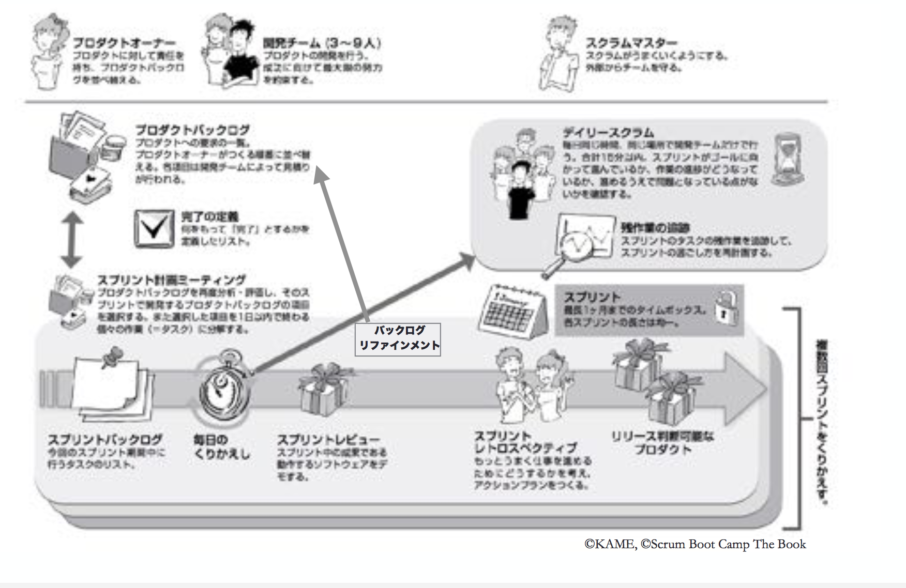

enPiT合宿
1日目
1日目の概要
1. アジャイル開発概論
永瀬美穂
2. 協働のワークショップ
---紙飛行機の演習
3. アジャイル開発とスクラム
スクラムとは
煩雑で変化の激しい問題に対応するためのフレームワークである。
スクラムは軽量で理解が容易ですが、習得は困難です。
スクラムの仕組み
プロダクトオーナー
プロダクトバックログの優先順位の最終決定者
スクラムマスター
1.何を作るかをプロダクトオーナーが考える
2.どうやって作るかは開発チームが考える
3.定期的に作っているものとその進め方をチェックする
4.もっとよくできるように改善を繰り返す
5.スクラムマスターはこの仕組みがうまくまわるようにする
4. アジャイルチームのコミュニケーション
アジャイル開発では、HRTの法則(謙虚・尊敬・信頼)が重量です。
コミュニケーションの効率を上げる為には、無駄な会議をなくし、顔を合わせて会話できる時間を獲得する事が大切です。その為に、時間・場所・目的を固定して、会議の日程を持つと良いです。
永瀬先生のお話の後に、ワークショップを行いました。
ワークショップ：ペアを作りトランプで対戦
1.始めに５分間、ルールの書かれた用紙を読み込む
2.読み込んだルールを基に、ペア同士でトランプ対戦を行う
(対戦中は私語厳禁・ジェスチャーは可能)
3.実はそれぞれの班に配られたルールは少しずつ違うところがあり、対戦中に違和感を感じるようにできている
2日目
ワークショップを通じて、チームの自己組織化と改善、チームワークによる反復的で漸進的なプロダクト開発のプロセスを体験する。
午前中は、チーム内のスクラムマスター、プロダクトオーナーなどの役割を決めて、ワークショップを進めていった。次に、作るもののテーマを決めた。遊園地や商店街などいろいろなアイディアが各チームから生まれた。
時間をスクラムマスターが管理し、限られた時間の中で各自のアイディアをブラッシュアップし、最低限、ユーザーにどのような機能を提供したいのか考えて、全体を交えたレビューを行い、講師や他の学生からのフィードバックをもらった。
その後に、隣のチームに自分たちの作りたいものを作ってもらうというワークショップを行い、実際の開発の中でプロダクトオーナーとのコミュニケーションの大切さを学んだ。

その後に、隣のチームに自分たちの作りたいものを作ってもらうというワークショップを行い、実際の開発の中でプロダクトオーナーとのコミュニケーションの大切さを学んだ。
5回スプリントを行い、皆からのフィードバックを随時もらい、より緊張感を高めることができた。
3日目
3日目はテスト駆動開発を実際の現場と同じようにして行った。くじ引きでペアになり、合計で5回の開発を行った。